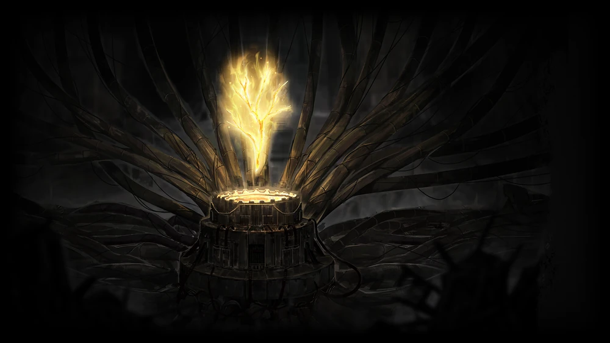
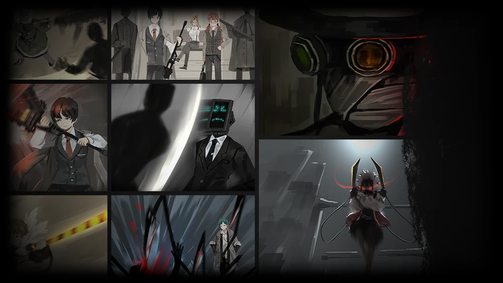
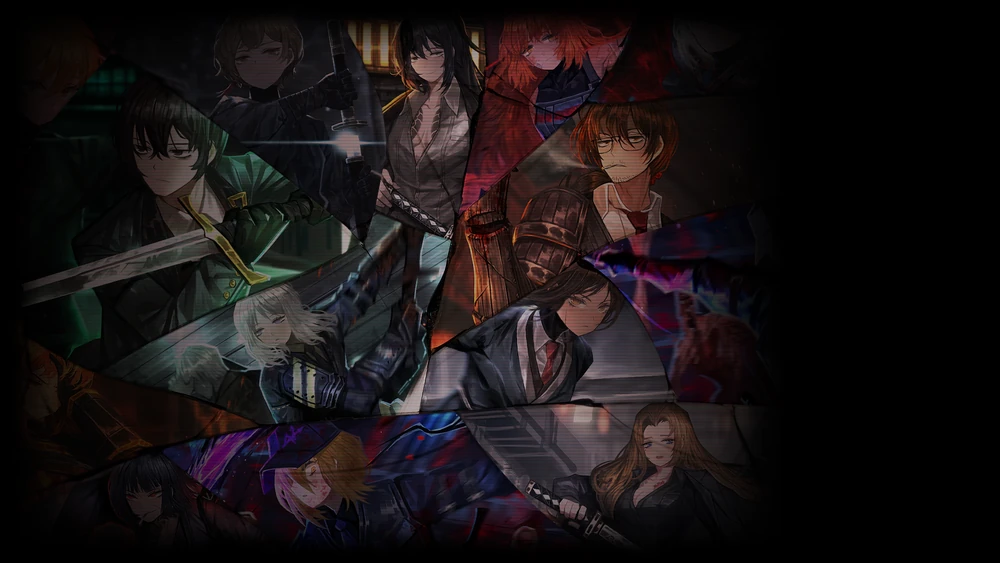
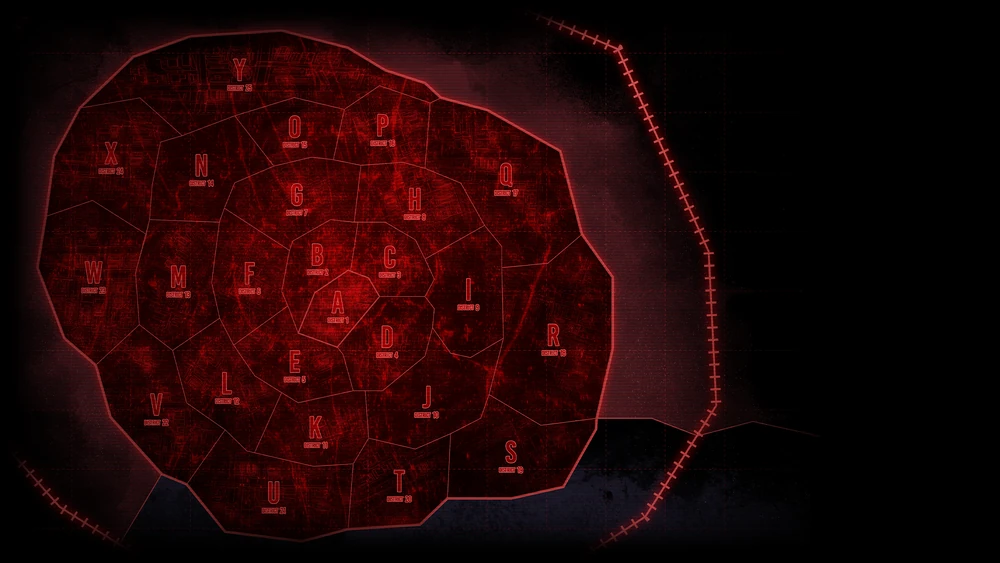
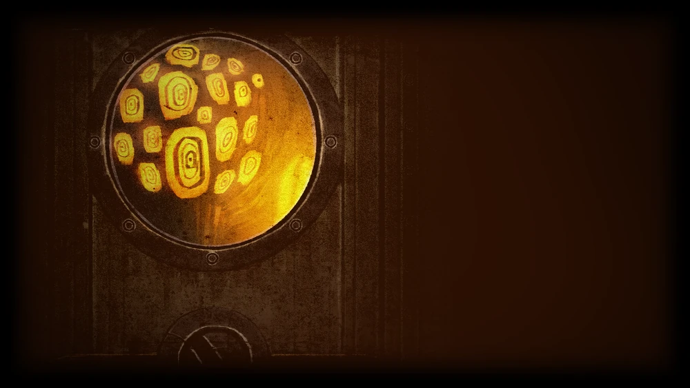

ABANDON YE WHO ENTER HERE
Golden'Bough
Power through the exploitation of monsters called 'Abnormalities'
Fixers
Fixers are the all-around handymen of the City
Identities
Borrowing an "identity" in the countless alternate realities
The City
Our massive City is divided into 26 Districts
Nests

Nests are what we call the 26 provinces of the City.
Abnormalities
Those poor creatures got trapped in the facilities


Employees

Don Quixote is a rambunctious and steadfast woman with a strong sense of justice. She wants nothing more than to be affiliated with the Fixers she idolizes so heavily.

Ishmael is a straight-laced and dependable woman with a tendency for blunt words. She was previously affiliated with the Pequod and its crew.
Don Quixote is a rambunctious and steadfast woman with a strong sense of justice. She wants nothing more than to be affiliated with the Fixers she idolizes so heavily.
Ishmael is a straight-laced and dependable woman with a tendency for blunt words. She was previously affiliated with the Pequod and its crew.